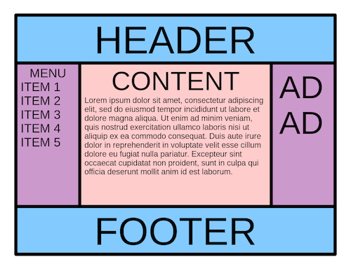

In web development, the CSS box model refers to how HTML elements are modeled in browser engines
and how the dimensions of those HTML elements are derived from CSS properties.
It is a fundamental concept for the composition of HTML webpages.
The box-sizing property controls how the total width and height of an element are calculated. It determines whether the specified width and height include padding and borders or not.
Task 2
What Is the Clearfix Hack?
When you float an element (such as an image or a container), it is taken out of the normal document flow. This can lead to unexpected behavior, especially when elements are stacked
next to each other. One common problem arises when the parent container of floated elements ends up with a height of 0.
As a result, the layout can break, and content might overlap or spill outside the container. The clearfix hack provides a solution to this issue without resorting to additional structural markup.
It ensures that the parent container properly encloses its floated children, preventing layout disruptions.
When Does It Need to Be Applied?
You should apply the clearfix hack when:
Floating Elements: You have floated elements (e.g., images, divs) within a container.
Parent Container Height Issue: The parent container does not expand to accommodate the height of its floated children, resulting in layout problems.
Task 3
Margin collapse occurs when vertically adjacent margins of block-level elements collide, resulting in a shared margin space. The size of this shared space is determined by the larger margin value. Imagine it as an arm wrestling match: the larger margin “wins” and takes over the shared space.
margin auto:
Horizontal Centering: Applying margin: auto to an element’s left and right margins horizontally centers the element within its container.
It absorbs available horizontal space, ensuring center alignment.
Block Elements: Works well with block-level elements (not floated, inline, or absolutely positioned).
Faux Float: When applied to just one side, it pushes the element to the opposite side, creating a visual effect similar to floating.
Vertical Centering (Tricky): By using margin: auto with equal dimensions (height and width), you can center an element vertically within the browser.
Note: Doesn’t work on elements with a specified width of auto (results in 0px margins).
negative margins:
Image Replacement Trick: Use negative margins to replace regular fonts with “picture” fonts for custom typography.
Image Rollovers with Borders: Negative margins prevent layout shifts on image rollovers by compensating for border size.
Center Screen Positioning: Center an object in the middle of the browser by using negative margins equal to its height and width.
Overlapping Elements: Make one element overlap another for visual effects.
Extend Over Padding: Extend an element over its parent’s padding without removing the parent’s padding
Task 4
The Holy Grail layout problem also encompasses another classic problem: making a footer stick to the bottom of the screen when there is not enough content to fill up the page.
This can be solved by adding min-height: 100vh to the container of the page's contents.
Holy grail Layout with Dropping Footer:

Task 5
Achieving this layout can be challenging, but modern CSS techniques make it more manageable.
There are a few ways to create the Holy Grail layout:
Using Flexbox
Flexbox allows content-aware sidebars by distributing available space proportionally between the main area and sidebars.
It considers the width of internal content, making it ideal for responsive designs.
HTML:
CSS:
Using Flexbox
CSS Grid provides powerful layout capabilities.
It allows you to create complex grid structures with ease.